1930—Paris Frocks at Home
Lesson VI—Suiting Patterns to Proportions
"Check and double check"
You now have the supreme satisfaction of knowing that you have painlessly acquired the right colors and fabrics for your new costume. You also have selected a pattern of good lines. But wait. Are you sure you know the size that fits you best? You may have some delusions possibly acquired by the size marked on your last ready-to-wear dress, by which a kind hearted manufacturer made you a 14 as a bit of subtle flattery. You may have some personal characteristics which no sizing system, even one as perfect as Butterick's, can take into account. For instance, an over-large upper arm brought about by constantly playing family chauffeur is not provided for in your otherwise perfect 36 pattern. So, be measured. Insist on it when you buy your pattern.
Recite your lesson to a salesman.
Put a couple of discreet checks on your pattern envelope opposite your size and yardage before you walk on to the fabric department. Then, parrot-like, recite your lesson to the sales person. Thus you save your time, your pennies, and your poise.
Trial before error.
Arrived home, tear off paper and string and let creation begin. The first burning question to be settled is the length of your dress. Hold the paper pattern up against you. Shall you turn your hem up on that row of perforations or add or subtract an inch? Your mirror answers this question for you, but be sure as you make this momentous decision that you are holding the waistline of your paper pattern against your own waistline.
Then, pin your pattern together and try on your paper half dress. This little session of finding out about your pattern and yourself before you snip a single snip in your perfectly good material will save you any subsequent puzzling surprises. This is your chance to play safe.
Pattern markings keep you straight—don't detour.
When you opened the pattern envelope you must have noticed the blue-green sheet of paper with printed illustrations. This is the Butterick Deltor, your friendly consultant while you make your costume. Lay it aside for the moment and examine the tissue paper pieces. All of them have round punched holes of two sizes, as well as small notches at occasional places on the edges of the paper. Be assured that each mark on the tissue has a special style meaning which you will certainly want to know before you cut your dress. But, fear not, there is nothing cryptic about them. They are only another way of reading your A, B, C's.
First select your view.
After comparing the pieces with those on the Deltor's diagram, lay aside the pieces of tissue, if any, which are not needed to make Views A, B, or C, as the case may be, and in order to avoid any crowding on your cutting table, return them to the envelope.
Pattern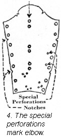 shorthand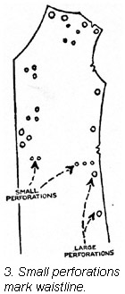.
There are perforations which appear in almost every Butterick pattern, a pair of small perforations placed horizontally. They are pattern shorthand for the word "waistline." When found on the sleeve they stand for the word "elbow." By placing these waistline marks at your waistline you can readily see whether you need to lengthen your pattern above the waistline or shorten it there. (Ill. 3, 4.)
Consider the hem allowance.
Be sure you have accounted for the hem allowance when making any tests for length.
If perforations could talk.
You have by this time doubtless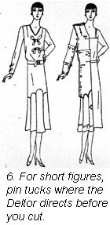 noticed 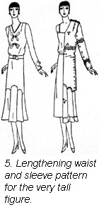the large holes in your tissue grouped like a triangle and placed close to the edge of the paper. They are Butterick shorthand for, "place this edge on a straight fold of the material." On some pieces you will see pairs of large perforations. They say, "place us on the straight grain of material." Still another line of single large perforations always found three-quarters of an inch from the edge of the paper says, "I mark the famous Butterick let-out seam." These are very important since they make it possible for you to make seam adjustments during fitting. Custom tailors and Paris couturiers always cut clothes this way.
The other perforations in the paper, both large and small, begin to take on special meanings for you. They are chiefly indicative of special constructions such as placing plaits, making shirrings, setting on yokes or inserting panels.
The long and the short of it.
Are you the five feet one or two 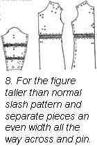charming bit of 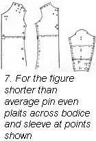humanity? Or the willowy five feet nine poster girl? In either case, you must alter your pattern a bit before you cut the material.
Pin your pattern together as we have suggested and locate the waistline against your own. If these perforations seem to come to rest below your waistline, you must pin a tuck in the paper to raise the natural waistline perforations to the correct place. If the perforations come above your waistline, use a tape line to measure how much too high they are.
If you must have more length, cut the paper straight across. Separate the two pieces and insert a strip of paper in the gap, the width your tape measure told you while you were examining your tissue paper dress. Now try on your paper dress again.
Sleeve lengths are altered just this same way.
For subtle flares.
The illustrations on this page and the next show you how the flare you admire so in the picture can be kept, even though you must shorten or lengthen your skirt.
If the 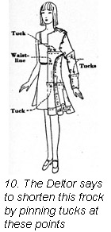flaring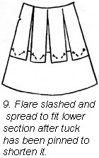 flounce or circular skirt is less than three yards at the lower edge, do not cut off any paper at the bottom of the skirt, for by doing this you lose some of the ripple. Instead, pin a tuck following the circular line as well as possible and then just cut through the fold in the paper. Lay the top section over the lower section. Slash the top section at intervals and spread it so that both sections fit. (Ill. 9.) Of course, the top section is set down on the lower section the number of inches you must shorten your skirt.
It's all a matter of proportion.
Circular flounces may often be lengthened or shortened at the bottom but in the illustration on page 33, while the dress may be lengthened by adding inches at the bottom it must be shortened by folding a tuck in the flounce and lapping slashed pieces as we have just described. In this way whatever your height, your dress reproduces the same proportionate flare that you see in the illustration.
Attention to these little niceties in dressmaking is so important that we have shown them all on the Butterick Deltor, sketched as they come from the hands of expert dressmakers.
Youthful flares should be encouraged.
Our modern children, even the young ones, have a distinct flair for clothes. Butterick knows this and makes just as complete Deltors for the children's patterns as it does for those designed for their mothers. Test your little girl's pattern for length just as you would your own and make alterations at the points suggested in the Deltor. That way lies childish chic.
The little girl's dress in the illustration would lose much of its charm if the set-in panel were shortened or lengthened at the hem. The Deltor says, "Shorten or lengthen, Madam, a little below your child's hips."
Do as the Deltor says.
The amount of ripple and fullness in flounces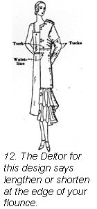 requires 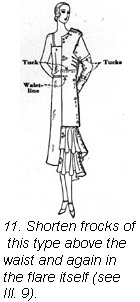a definite finesse in designing. Do not then interfere with your designer's plan but consult again your constant companion, the Deltor. In the woman's dress illustrated below, the Deltor says these two flounces, since they are quite full, may be shortened or lengthened at the bottom without injuring the spirit and feeling of this very flattering Butterick design. You can't possibly go wrong you see, if you and your Deltor make the dress together step-by-step.
Have we taken on weight?
Well, what if we have taken on a little weight. We can always diet a little and roll a lot, but in the meantime we may have to make a few alterations in our perfectly proportioned pattern.
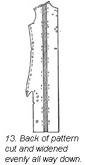For broad backs.
When one's back is broader than the convenient table of measurements on the pattern envelope says it should be, just slash the back pattern from shoulder to bottom as shown in illustration 13. Spread the two pieces of the back apart and insert a strip of paper wide enough to increase width of back.
Recut your back pattern.
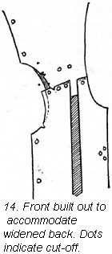The back shoulder line then becomes longer than the front shoulder line. Place the shoulder lines together at the neck. Add half the increased distance to the front at the armhole by building out the pattern, and take away half the increased length from the armhole on the back by cutting off the pattern. This change at the armhole runs off to nothing at the notches.
The illustration (number 14) shows you how.
Arms must be easily bent.
Sleeves must be as easy to wear as your skin, but must also look as shapely as those in Beau Brummel's best coat.
When your arms are a little larger than they really should be, you must take steps to avoid that ugly pull across the top of your sleeve. It looks ugly and makes you nervous.
Some of us can get enough leeway by using the let-out seam in the sleeve. Under no circumstances, however, may this seam be skimped.
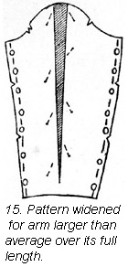For Junoesque arms.
For an arm that is uniformly oversize, the sleeve pattern should be cut from the top almost to the bottom from the highest point of the top curve. Separate these edges as much as necessary at the top to give the required girth around the upper arm. (Ill. 15.)
For golfers and lady chauffeurs.
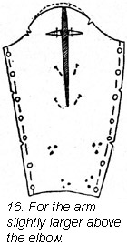Some arms have a large biceps between elbow and shoulder. Lay the sleeve pattern on a piece of paper and outline the top curve. Slash the tissue paper sleeve pattern from shoulder to elbow placing this slash a little back of the center of the sleeve. Spread the pattern as in illustration 16. Lay in a little dart each side of the slash to take up the slight puffiness in the paper. Build up the top of the tissue paper sleeve to meet the line you drew on the paper, and this new sleeve will see you through any golf tournament with complete comfort.
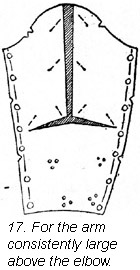If your arm is quite fleshy all the way from shoulder to elbow you had better slash the tissue paper sleeve pattern in these places. Illustration 17 shows you very clearly how this should be done.
Whenever you alter a sleeve pattern by spreading it at the top, be sure you curve the top line as nearly like the original curve as possible. Sleeve curves are never flat on top. When setting in this altered sleeve you may need to slash the armhole in the dress just a little to accommodate the larger sleeve.